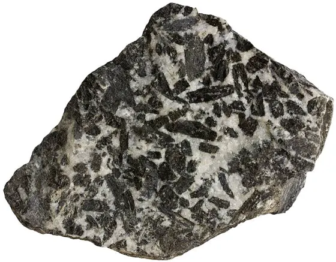

Mineral Grimoire
 Gabbro
Gabbro
Appearance
Deep green to grey, blue colored opaque stone with coarse grained, gritty texture. Contains minerals such as feldspar, chlorite, serpentine, muscovite, pyroxene, hercynite, and magnetite in a matrix, and may contain olivine, chrome garnet, actinolite, and biotite.
Origin
Worldwide - one of the most common rocks, underpins most of the world's oceans and much of the land surface.
Attributes
A plutonic rock formed when molten magma cooled into a crystalline mass. The synergistic effect is incredibly powerful. Gabbro helps to ride out energetic perturbations and puts you in touch with your Higher Self. Highlighting changes that are needed in your life, it dissipates confusion and instils strength of mind. The stone assists in releasing karmic contracts and core soul beliefs that no longer serve you.
This peaceful stone is extremely supportive and deeply grounded. It plugs you into the earth and puts a protective shield around you, cutting out Wi-Fi and electromagnetic pollution and negative energies. Holding Gabbro filters downloads of information occurring within the dimensional shift. It stabilizes your contact with the earth bringing these into play at ground level. Gabbro makes you aware of the importance of experiences that you may have overlooked at the time, pointing you to the gift at their heart. The stone is an excellent stress buster.
Gabbro may energetically regulate apoptosis, the essential biological process of cell death that allows the cellular lifecycle to continue as cells die, regenerate and renew themselves. When this process is disrupted diseases such as auto-immune dysfunctions and cancer occur. Said to assist in locating energetic disharmony within the physical body, Gabbro defuses subtle energy blockages and is profoundly detoxifying for all the bodies.
Healing
Gabbro is reputed to treat "hot flashes", cellular swelling and infections, disorders of the immune system, bruising and sprains. Gabbro may alleviate the effects of geopathogens and fevers and balance alkalinity in the body.
Position
Wear, hold, place, grid as appropriate. Disperse the gem essence into the aura or the environment.
Additional Notes
Blizzard Stone: Speckled with white on a black background, Alaskan Blizzard Stone is a combination of chlorite, serpentine, muscovite, pyroxene, hercynite, magnetite and white feldspar. Providing powerful protection against electromagnetic smog from computers etc, it strengthens the biomagnetic field. This stone helps you to attend to your own business and let other people get on with theirs. Uniting opposites, it is useful for past life work and for recognizing how the past impinges on the present. Blizzard Stone removes from the Akashic Record and from the karmic blueprint any incidences of persecution, prejudice, racial hatred or discrimination, whether as perpetrator or victim, restoring peace to the psyche and the soul. Blizzard Stone is said to be a specialist metaphysical agent for the eradication of hatred, violence and oppression on our planet. It reverses anti-social behaviour and aggression and fosters forgiveness. Grid on a map or the environment in areas of conflict. Blizzard Stone clears blockages from the physical body, strengthens the immune system and increases your sensitivity to radionic treatment.
Gabbro with Pyrite is a powerful synergistic combination that keeps you protected and grounded during metaphysical working.
Indigo Gabbro takes you journeying into multi-dimensions and keeps you grounded at the same time, enabling you to be both 'here' and 'there' simultaneously. An excellent support, hold it during traumatic times to uplift and stabilize your energies.
Mystic Merlinite: Madagascan, Mystic Merlinite is energetically similar to Merlinite. On the third eye, it is one of the fastest ways to open metaphysical abilities, move into expanded consciousness and contact elementals and devas. Useful in past life healing, Mystic Merlinite assists in gathering up fragmented soul parts, purifying them and returning them to the incarnated soul or to the Higher Self if it is not appropriate for the soul part to return to earth. It assists in exploring the hidden parts of the psyche and applying retro-cognition to better understand situations that have had a profound effect on how you live now.